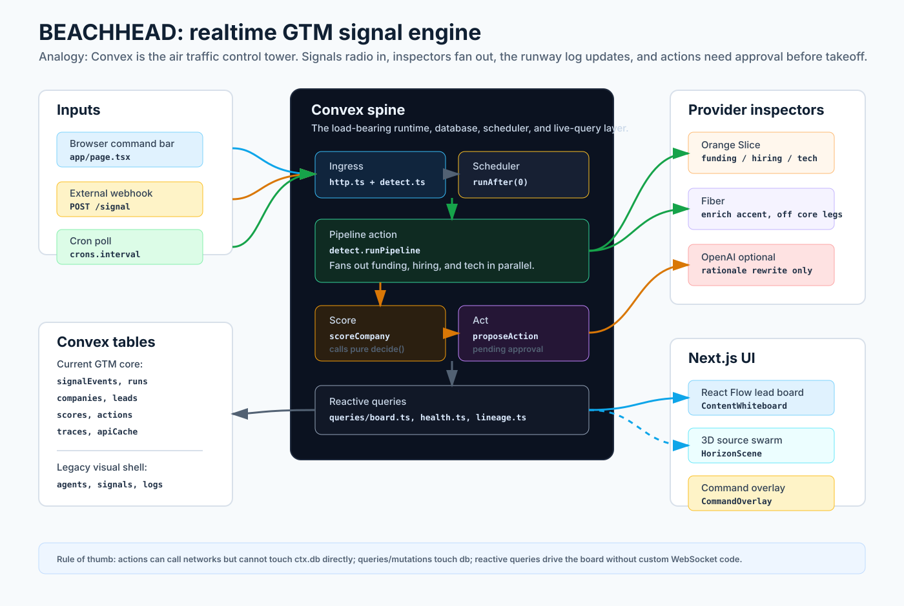
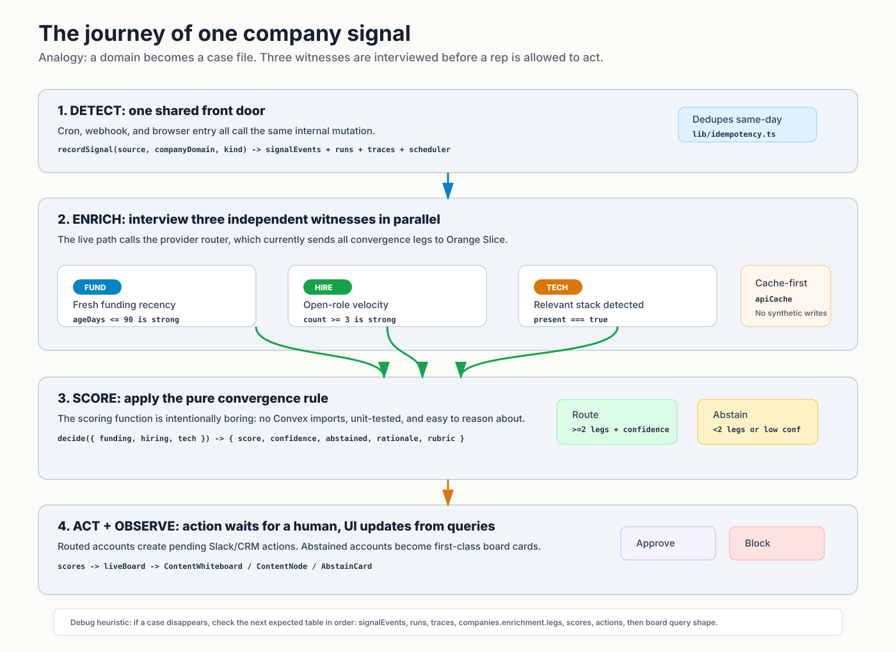
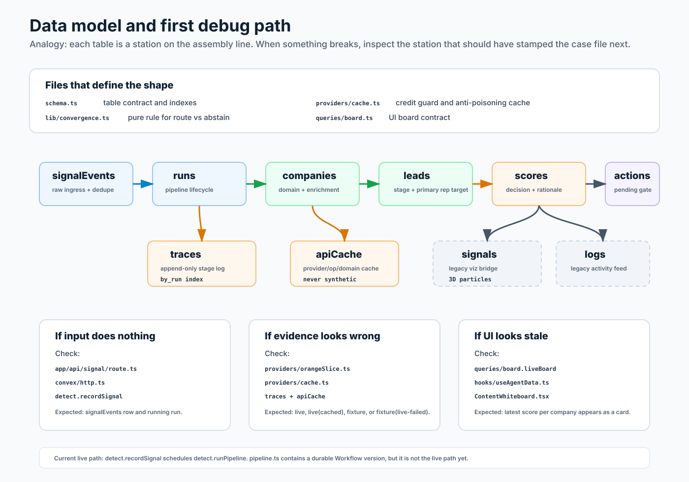

BEACHHEAD Visual Primer
Three graphics for onboarding a new engineer to the current horizon/ app:
the system map, the signal journey, and the data/debug map.
1. System Map

2. Signal Journey

3. Data And Debug Map
